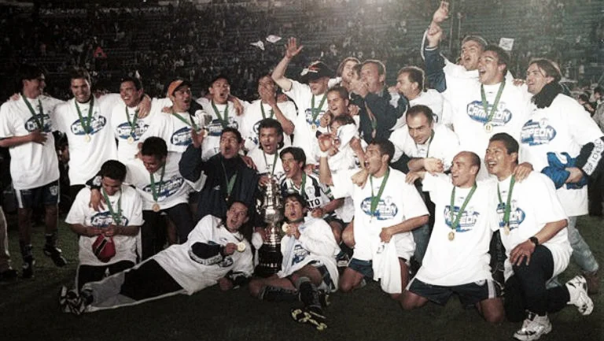
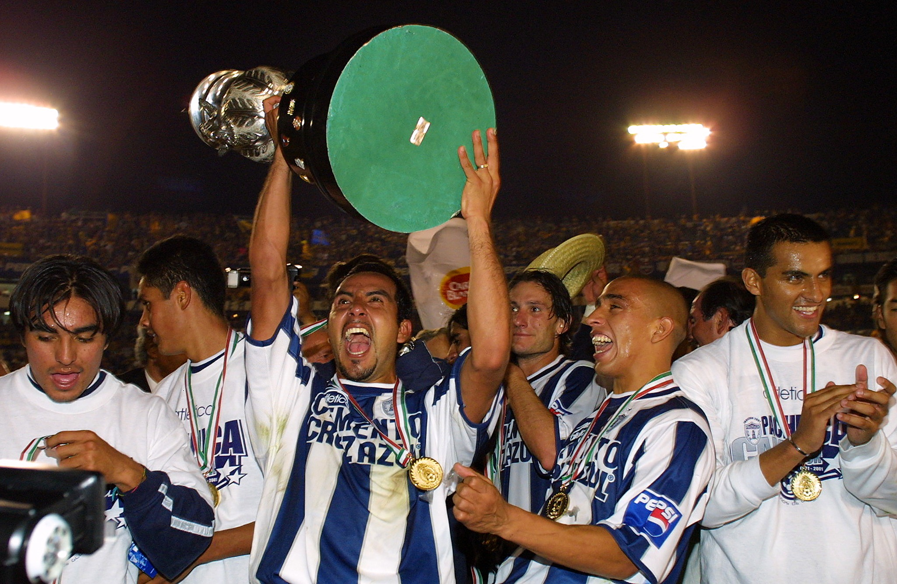
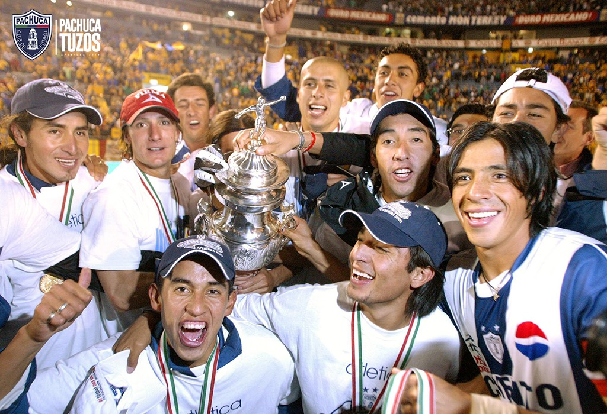
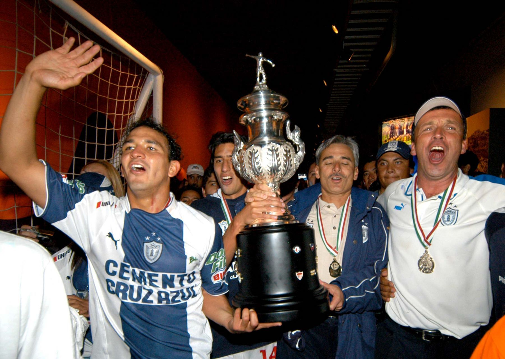
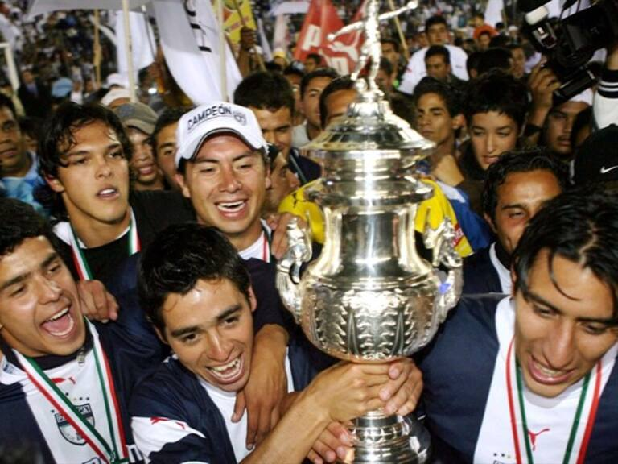
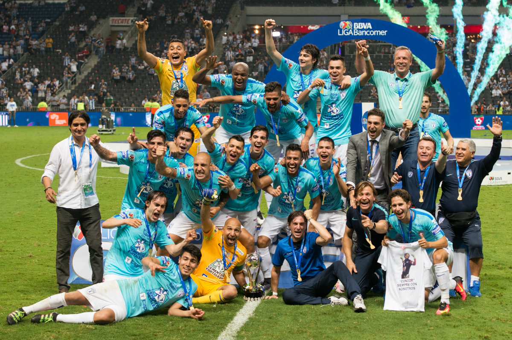
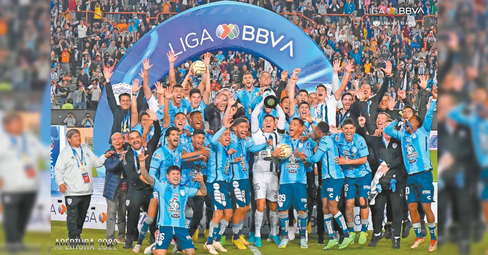

Liga MX
- Invierno 1999
- Invierno 2001
- Apertura 2003
- Clausura 2006
- Clausura 2007
- Clausura 2016
- Apertura 2022
El primer gran logro en la historia moderna del Club Pachuca llegó cuando el equipo logró avanzar a la liguilla y alcanzar la final del campeonato...

Años después, el club volvió a destacar al clasificar nuevamente a la liguilla...

En una etapa posterior, el equipo hidalguense volvió a alcanzar la final...

El club continuó sumando logros al avanzar una vez más hasta la final...

Posteriormente, Pachuca volvió a disputar una final...

Después de varios torneos sin coronarse...

En su campeonato más reciente...

Concacaf
- 2002
- 2007
- 2008
- 2010
- 2017
- 2024
Pachuca obtuvo su primer título internacional de CONCACAF...

Tiempo después, el equipo hidalguense volvió a destacar...

En la siguiente participación...

Continuando con su historia continental...

Años más tarde...

En su participación más reciente...

Internacionales
- Copa Sudamericana 2006
- Derbi de las Américas 2024
- Copa Challenger 2024
Pachuca hizo historia en 2006...

En diciembre de 2024...

Tras ganar el Derbi...

Otros
- Ascenso 1997-98
- SuperLiga 2007
- Intercontinental 2024 (Subcampeón)
La Final de Ascenso...

La SuperLiga Norteamericana...

En 2024, Pachuca hizo historia...